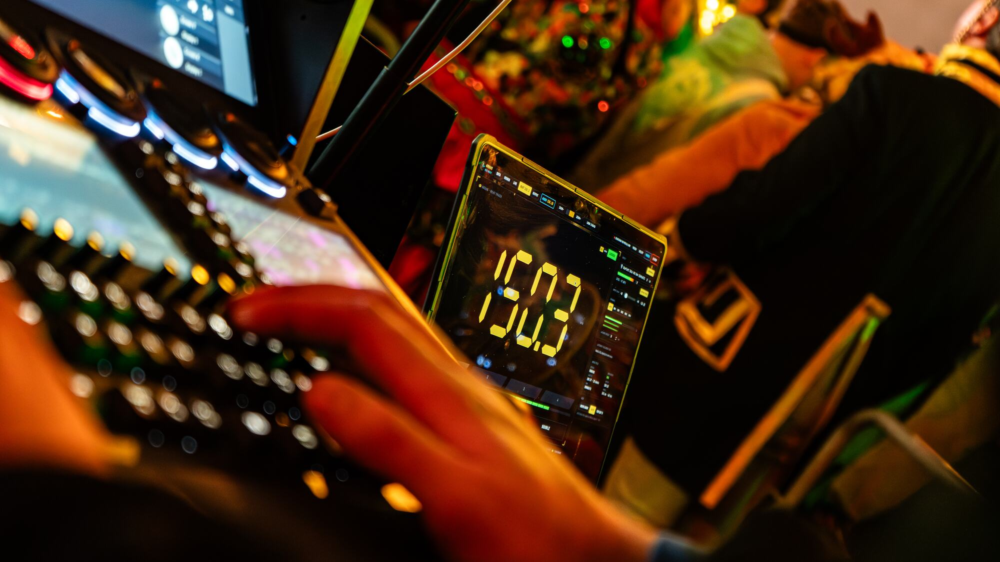
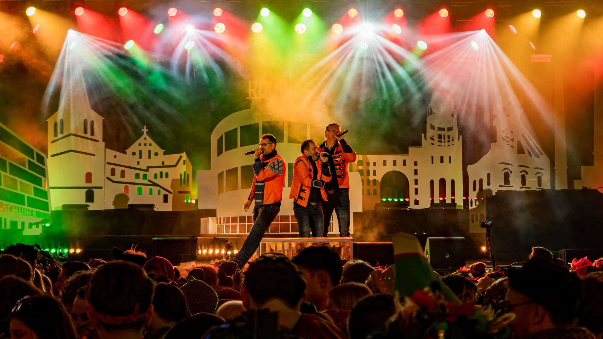
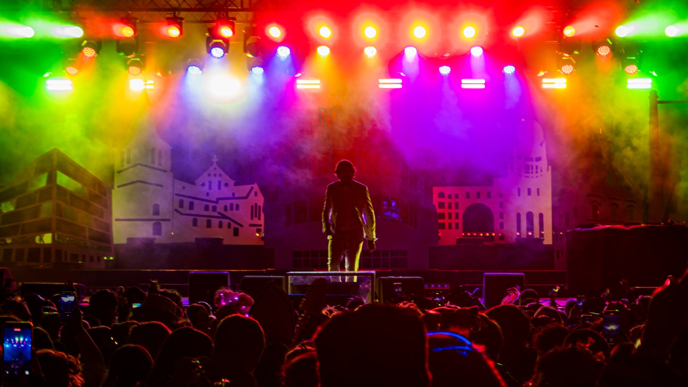
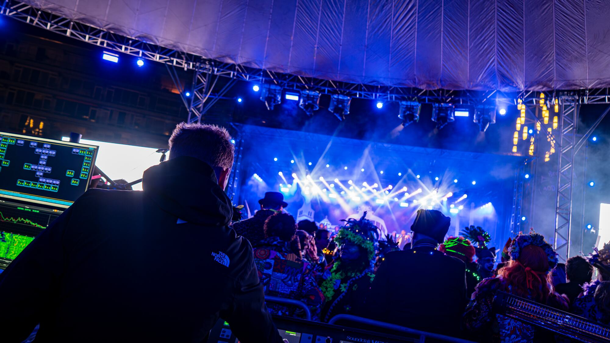

ARGUS Metron beta
Het tempo van de DJ, automatisch in je lichttafel. METRON leest de Pioneer CDJ’s via Pro DJ Link of luistert naar de audio, en stuurt de BPM rechtstreeks naar je grandMA3 of Chimp. Je ziet frases en drops aankomen, en koppelt verder via Ableton Link, MIDI en OSC. Voor Windows en Mac.
- Pioneer CDJ / Pro DJ Link
- Audio-analyse
- grandMA3
- Infinity Chimp
- Frases & drops
- Ableton Link
- MIDI
- OSC
- Windows
- Mac
Q2In het veldAod òp Nuj · Heerlen
Getest waar
het telt.
METRON draait al naast de tafel op echte shows: het tempo groot in beeld, de lichttafel volgt vanzelf. De beta brengt die versie naar jouw productie.






Aod òp Nuj 2026, HeerlenFoto’s: MATRIX E.I.L.
Q3AanmeldenTesters gezocht
Test METRON
als eerste.
- 01Meld je aan met dit formulier.
- 02Je krijgt meteen een bevestiging per mail. We bekijken elke aanmelding persoonlijk.
- 03Word je toegelaten, dan krijg je je beta-key en de download voor Windows of Mac.
Je aanmelding is binnen.
Je krijgt een bevestiging per mail; word je toegelaten, dan krijg je je beta-key en de download.
Terug naar ARGUS SystemsQ4Uit de showARGUS · METRON

Aod òp Nuj 2026, HeerlenFoto’s: MATRIX E.I.L.